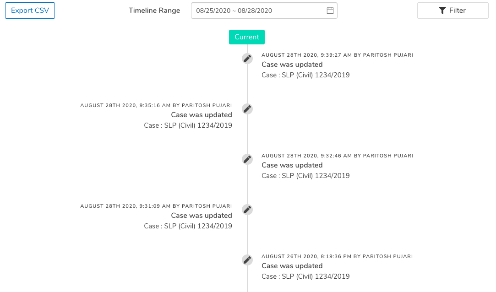
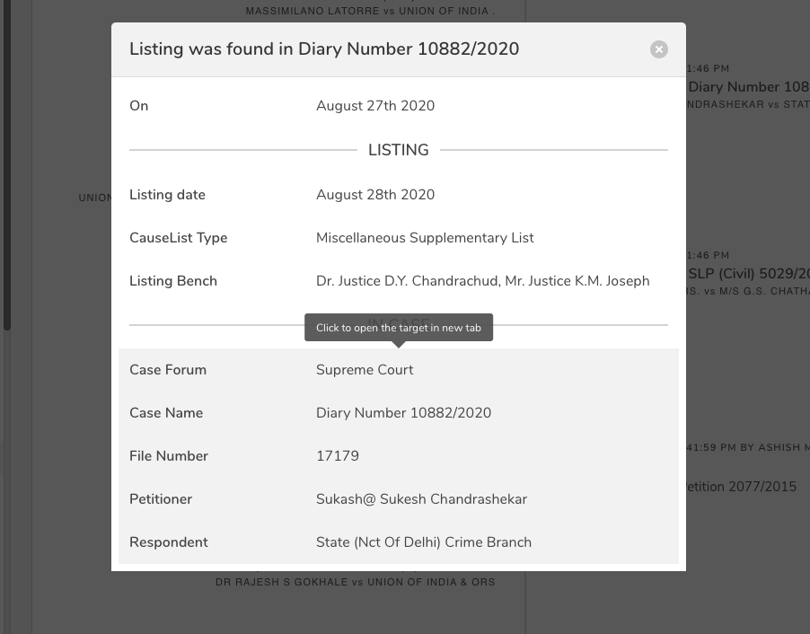

Timeline Component
Timeline Component keeps track of all the actions performed on the website by the user in a clean and systamtic way.
Technologies:
- - Sails.js
- - MongoDB
- - RabbitMQ
- - Vue.js
- - Javascript
- - HTML/CSS
More Details

Sub-Menus was the most challenging part of the project.
I had to make sure the component would behave unexpectedly as the component had several sub-menus which
could have lots of data.
The submenu also supported multiselect resources, like linking labels, assigning users etc and not just
simple buttons.